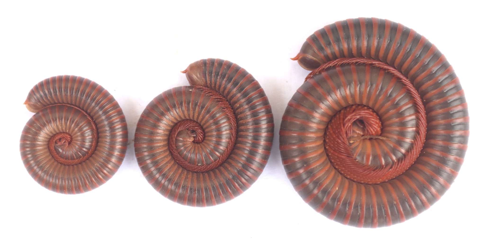

Our Mission
Our mission is to gather millipedes from various geographical locations and accurately identify their species. This involves field collection, specimen documentation, and detailed analysis to enhance the understanding of millipede biodiversity.
Featured Species
Gonoplectus sp., Spirostreptida, Harpagophoridae
Location: Dang Valley, Nepal
Why am I working on Millipedes?
Nepal is rich in Diplopod fauna. After compiling the checklist of millipedes, I found that the whole western and southern parts are unexplored. There are also many millipedes waiting for their names in the already explored parts.
Common Nepali Names (नेपाली नामहरु)
ओरिगाँठे, ग्याल्डुङ, Angalbeddi, Phalle, Bahukhuttey kira, Hajarkhutte kira, अरिमठ्ठे, डाॅगुल, ढेडो ओड्याल, ओलेङरा, आडिखोडे, आडिखुडे, आरिगोडे, आलुगिरे, अल्माणे, ध्योरल, ओर्याङ्ला, ढोरियाल